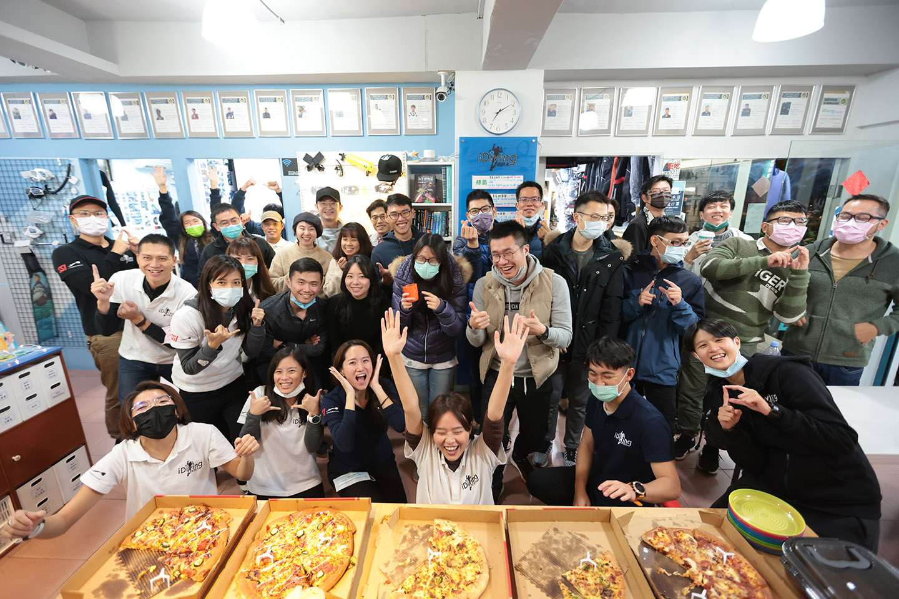
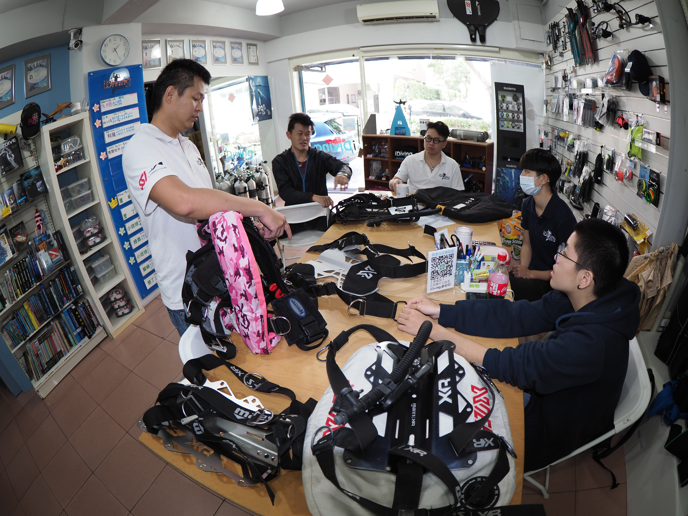
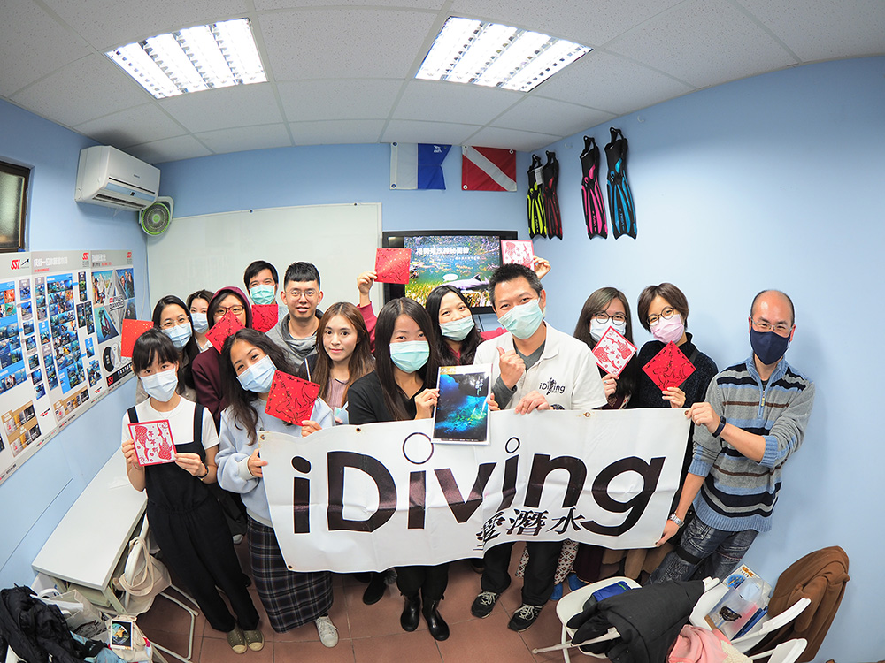
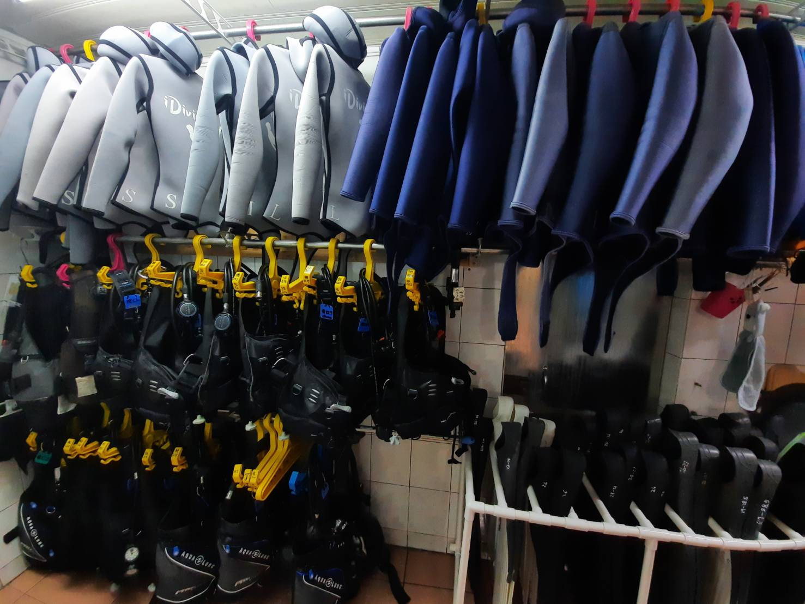

iDiving 前港店

九位駐店正職教練，提供課程、活動、器材維修等服務

兩間教室提供同學們一起上課，還有不定時環保講座

距離 3分鐘就有前港公園游泳池，上課走路好方便

提供各種尺寸的器材租借服務
電話：(02)2882-7696
地址： 台北市士林區前港街8號
前港店街景：https://reurl.cc/mvlQXM
營業時間：
全年周一公休
4月-10月 星期二至星期六 14:00~22:00 周日13:00~19:00
11月-3月 星期二至星期六 15:00~21:00 周日13:00~19:00
(以上時間為門市營業時間，潛水訓練時間請依照開課時之規劃)
*停車資訊：前港公園、百齡高中地下停車場
*搭乘大眾運輸工具，乘車資訊：
*搭乘台北捷運至劍潭站2號出口／3號出口，往承德路方向步行約5分鐘
*搭乘公車：26、41、218、280、288、529、616、618、756等至圓山皇宮大廈，往前港街方向步行約3分鐘
聯絡方式
- 網站 : www.idiving.com.tw
- Facebook 粉絲團 : www.facebook.com/iDivingFans
- Email : info@idiving.com.tw
- 電話：(02)2882-7696
- 傳真：(02)2882-7656
- Line@：

匯款資訊
|
iDiving全方位潛水中心 公司帳戶
戶名：愛潛水股份有限公司 銀行：中國信託 代號：822 分行：士林分行 帳號：285-54009941-9 |

|